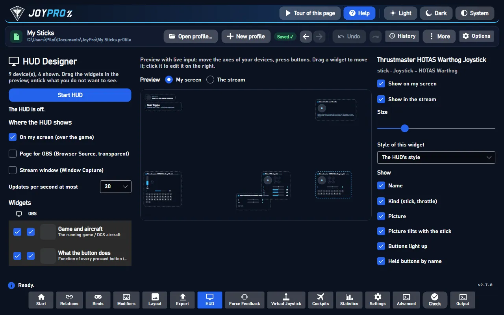

#Lülita ülekate
NuppkirjeldatudKäivita HUD / Peata HUD: käivitab HUD-i ülal märgitud väljunditega: loeb vajadusel seadmed, leiab töötava mängu ja laadib selle määrangud.
Uuesti vajutades sulgeb see kõik väljundid.
HUD näitab mängimise ajal sinu seadmeid ekraanil, nagu striimeri kontrolleri ülekate: juhtkangi pilt kaldub koos sinu juhtkangiga, hoovad ja teljed liiguvad ribadena, all hoitud nupud süttivad koos nimedega ja rida ütleb, mida vajutatud nupp töötavas mängus teeb („Gear Toggle“). See võib olla mängu peal, OBS-is või mõlemas, igaühel oma vidinad. See leht on selle kujundaja.


flowchart LR D["Sinu seadmed"] --> P["HUD"] O["Sinu määrangud<br/>mängus"] --> P P --> S["Minu ekraanil"] P --> B["Leht OBS-i jaoks"] P --> W["Voogedastuse aken"]
Peata HUD (sama nupp) sulgeb selle. Kõik, mis siin seadistad, säilib ja on pärast taaskäivitust jälle olemas.
Lohista vidinat eelvaates, et seda liigutada; klõpsa sellel, et seda paremal muuta. Paiguta automaatselt paneb need alla serva: gaasikang ja vasaku käe seadmed vasakule, pedaalid keskele, parema käe juhtkang paremale.


HUD-i aken on läbipaistev ja jääb aknas ja ääristeta režiimis töötavate mängude peale. Klõpsud lähevad sellest läbi mängu. Seda pole tegumiribal ega Alt+Tab loendis. Eksklusiivne täisekraan peidab selle (Windowsi piirang): lülita mäng ääristeta režiimi. Vajutatud nupu rida nimetab selle mängu ja õhusõiduki toimingu, näiteks „Weapon Release“ F-16C-s ja „Fire guns“ IL-2-s.
Kolm väljundit on üksteisest sõltumatud:
| Väljund | Kellele | Kuidas |
|---|---|---|
| Minu ekraanil (mängu peal) | sina | läbipaistev aken mängu peal |
| Leht OBS-i jaoks (Browser Source, läbipaistev) | sinu voog (soovitatav) | JoyPro pakub lehte ainult selles arvutis; Kopeeri paneb selle aadressi lõikelauale |
| Voo aken (Window Capture) | voogedastus Window Capture'iga | tavaline aken (võib olla mängu taga) läbipaistva või kromaatilise võtme taustaga |
Eemalda märge valikult Minu ekraanil, et mängida puhta ekraaniga, samal ajal kui voog näitab ikka HUD-i, või näita kummalgi erinevaid vidinaid: igal vidinal on kaks märget, monitor (sinu ekraan) ja OBS (voog). Eelvaade: Minu ekraan / Voog vahetab, mida kujundaja näitab. Kõige rohkem värskendusi sekundis (15, 30 või 60; 30 on sujuv ja kerge).
http://127.0.0.1:8765/hud) kõrval Kopeeri.Leht joonistab voo jaoks märgitud vidinad samadesse kohtadesse ja samades stiilides nagu rakendus, 1920 x 1080 laval, mis skaleeritakse allikale. Port on teise programmi poolt kasutusel? Vali jaotises Port teine ja kopeeri aadress uuesti.


Selle asemel Window Capture: märgi Voo aken, vali taust (läbipaistev, roheline, magenta, sinine või sinu värv). Lisa OBS-is Window Capture valikuga Capture Method: Windows 10 (1903 and up); värvi puhul lisa selles värvis Chroma Key filter. Kui läbipaistev taust on sinu OBS-is must, kasuta Browser Source'i või värvi.
Kuidas OBS Browser Source saab HUD-i: üks leht, seejärel ainult muudatused.
| # | Kes | Mis juhtub |
|---|---|---|
| 1 | OBS | Browser Source avab aadressi http://127.0.0.1:8765/hud. |
| 2 | JoyPro | Saadab lehe: paigutuse, stiilid ja pildid. |
| 3 | OBS | Avab /hud/events. See jääb avatuks. |
| 4 | JoyPro | Saadab oleku (teljed, nupud, mida nupp teeb) kõige rohkem 30 korda sekundis ja ainult siis, kui midagi muutus. |
| 5 | JoyPro | Saadab paigutuse uuesti, kui vidinad, kohad või stiilid muutuvad. |
Vidinad loetleb iga seadme pluss päise, määrangute jooksva rea ja õhusõiduki vidina. Laadi seadmed uuesti loeb ühendatud seadmed uuesti; Näita kõiki märgib iga vidina sinu ekraani jaoks; Paiguta automaatselt ja Lähtesta kohad panevad need paika.
Iga vidina kohta (klõpsa sellel eelvaates või loendis):


Õhusõiduki vidin: juhtkang, gaasikang, gaasi käigu riba, juhtkangi asend, juhtelemendid süttivad, allhoitud juhtelemendid nimega; Õhusõidukid (Automaatne: õhusõiduk, millega lendad, või mis tahes pilt, mis on selles arvutis seatud) ja Liigub koos (juhtkang ja gaasikang, mis seda liigutavad). Selle pildid tulevad mängu enda kokpitipiltidest (Kokpitid > Tee pildid minu mängudest või pildipakk), muidu JoyPro joonisest päris käepidemest.
Stiil sisaldab 40 eelseadet: Klaas, Neoon, Minimaalne, puhtad (Matt klaas, hele, Striimija, lihtne, Striimija, julge, Kompaktne, Suur tekst, Pastell, Ainult kontuurid), kokpiti ekraanid (Sõjaväe roheline HUD, Merevaigukollane MFD, Reisilennuki PFD, Klaaskokpit, Öönägemine, Punane kokpitivalgustus, Vektor-traatmudel, Retroterminal, Warbird, Hologramm), mängud ja žanrid (Kosmoseoranž, Holo tsüaan, Küberpunk, Synthwave, Neoonroosa, Võidusõit, Taktikaline liivakarva, Meresinine ja kuld, Stealth, Kummitus), värviteemad (Arktika, Kõrb, Ookean, Päikeseloojang, Kuninglik, Süsinik) ja loetavus (Kõrge kontrast, Kõrge kontrast, hele, Ühevärviline, Ühevärviline hele). › liigub järgmise juurde.


All: rõhuvärvid ühe klõpsuga, Rõhk, Vajutatud ja Läbipaistmatus, seejärel kujundusvalikud elementide kaupa: Kaardid (taust, ääris, nurgad, vari), Tekst (font, suurus, tähevahe, värvid, Paksud nimed), Juhtkangi näidik (rõngas, ruut, sihtrist, radar, punkt; suurus, kuma), Ribad ja hoovad (kujud, kõrgused, tühi osa) ja Nupud ja märgid (kujud). Muudetud valik teeb stiilist „Oma kujundus (muudetud)“: Salvesta stiil hoiab selle sinu nime all, Võta muudatused tagasi läheb tagasi eelseadele, Ekspordi stiil... / Impordi stiil... jagavad seda failina, Kustuta eemaldab sinu oma stiili.
Mida nupp teeb: mitu rida, kui kauaks need jäävad (sekundites), fondi suurus, Näita seadet ja nuppu ja Ainult kui mäng töötab. Klõpsuläbipaistev laseb hiireklõpsud HUD-i aknast läbi (rakendub HUD-i käivitamisel).
JoyPro leiab töötava mängu selle protsessi järgi (DCS, IL-2, Star Citizen ja iga teine mäng, mida ta toetab) ja näitab ainult selle mängu määranguid. DCS vajab ka õhusõidukit: vali see jaotises DCS-i õhusõiduk või kasuta Paigalda DCS-i konks, et DCS ütleks JoyProle õhusõiduki iga missiooni alguses (väike Lua-fail pluss üks kaitstud rida failis Export.lua, enne varundatud; Eemalda paneb faili baidi kaupa tagasi; sulge enne DCS). Kontrolli ütleb, kas konks on paigaldatud.


Vaatemudel: MainWindowViewModel.Hud.cs (seadmed, vidinad, paigutus), MainWindowViewModel.HudStyles.cs (eelseaded, oma stiilid, import/eksport), MainWindowViewModel.HudStream.cs (väljundid, voo leht, õhusõiduki vidin), MainWindowViewModel.HudAxes.cs (pulga teljed), MainWindowViewModel.Overlay.cs (käivitus/peatamine, töötav mäng, nuppude read, DCS-i konks). Vaated: Views/HudWindow.axaml, Views/Controls/HudSurface.axaml, HudElements.cs, HudPanel.cs. Eelseaded: Models/HudStylePresets.cs.
engine hud devices annab iga ühendatud seadme mudeli, tüübi, käe, tootepildi, teljed koos nende rolliga, nupud koos nimede ja juhtelementide ID-dega (Controls, õhusõiduki vidina jaoks) ning paigutuspildi nuppude asukohtadega.engine overlay map (--game, --plane, --unit): määratud nupud koos modifikaatorite ja pealkirjadega. Modifikaatoritega määrang kuvatakse, kui selle modifikaatoreid hoitakse all; võidab määrang, millel on kõige rohkem sobivaid modifikaatoreid.engine overlay dcs-hook status / install / remove (--path, --dry-run): Scripts\JoyProOverlay.lua pluss üks pcall-iga ümbritsetud rida failis Export.lua; DCS saadab üksuse tüübi aadressile 127.0.0.1:1992 (UDP). Konks kutsub välja teiste skriptide (SRS, Tacview) ekspordifunktsioonid, mille ta asendab.Services/HudStreamServer.cs, HudStreamHub.cs, Resources/hud-stream.html; seotud ainult aadressiga 127.0.0.1, muu hostinimega päringud lükatakse tagasi. GET /hud (leht), /hud/events (Server-Sent Events: layout, state), /hud/img/<id> (pildid PNG-na), /hud/state (JSON). Ilma ühendatud leheta ainult kuulab.Services/HudInputPump.cs hoiab iga seadme kohta ainult uusimat aruannet ja rakendab neid valitud sagedusega; elemendid joonistatakse uuesti ainult muutumisel; aruande kohta ei eraldata midagi; pildid lõigatakse üks kord (õhusõidukite käepidemed 480 px kõrged). Mõõdetakse HUD-i kestustestiga protsessori, mälueralduse ja mälu eelarvete vastu.%APPDATA%\JoyPro2\hud.json (kohad, suurused, vidinate märked ekraani ja voo jaoks, stiil kõigi valikutega, oma stiilid, väljundid, port, taust, värskendussagedus). Stiilifailid: *.joypro-hudstyle.json ("format": "joypro-hud-style").Viide: hud.
Selle lehe taga olev funktsioonide dokumentatsioon, loodud hoidlast:
42 juhtelementi, loetud programmi lähtekoodist: 42 kirjeldatud, 0 lähtekoodi faktidega (kohtspikker, koodikommentaar, mootori kutse), 0 veel täiendamisel.
Käivita HUD / Peata HUD: käivitab HUD-i ülal märgitud väljunditega: loeb vajadusel seadmed, leiab töötava mängu ja laadib selle määrangud.
Uuesti vajutades sulgeb see kõik väljundid.
Kohtspikker Läbipaistev HUD mängu peal. Tühjenda märkeruut, et su ekraan jääks puhtaks, samal ajal kui voog näitab HUD-i edasi.
Näitab HUD-i läbipaistva aknana mängu peal.
Võta märge maha, et hoida oma ekraan puhas, samal ajal kui voog näitab ikka HUD-i.
Kohtspikker JoyPro pakub HUD-i veebilehena ainult selles arvutis. Lisa OBS-is Browser Source selle aadressiga: taust on läbipaistev, oma CSS-i pole vaja.
Kui HUD töötab, pakub JoyPro seda veebilehena ainult selles arvutis OBS-i Browser Source'i jaoks: läbipaistev taust, ilma kohandatud CSS-ita.
Märgituna kuvatakse allpool aadress koos nupuga Kopeeri ja Port.
Kopeerib OBS-i lehe aadressi lõikelauale.
OBS-is: Sources > + > Browser, kleebi see URL-iks, laius 1920, kõrgus 1080.
Kohtspikker Eraldi aken, mitte pealmine: see võib olla mängu taga. OBS-is: Window Capture hõivemeetodiga Windows 10 (1903 and up); chroma key värvi korral lisa Chroma Key filter.
Kui HUD töötab, avab see OBS-i Window Capture'i jaoks oma akna, läbipaistva tausta või allpool valitud chroma key värviga.
OBS-is: püüdmismeetod Windows 10 ja värvi jaoks Chroma Key filter.
Vidina monitori märge loendis: näitab seda sinu ekraanil.
Vidina OBS-i märge loendis: näitab seda voos.
Loeb ühendatud seadmed uuesti: uued seadmed saavad vidina, pildid ja nuppude nimed värskendatakse.
Kasuta seda pärast seadme ühendamist.
Märgib kõik vidinad sinu ekraani jaoks. Võta loendis märge maha nendelt, mida sa ei soovi.
Kohtspikker Gaasikang ja vasak käsi vasakul, pedaalid keskel, parema käe juhtkang paremal, mööda alumist serva
Paigutab sinu ekraanil näidatud seadmevidinad mööda alumist serva: gaasikang ja vasaku käe seadmed vasakule, pedaalid keskele, parema käe juhtkang paremale; mis ära ei mahu, läheb rea võrra üles.
Uued kohad jäetakse meelde.
Paneb iga vidina tagasi vaikimisi kohale ja suurusesse; see, mida iga vidin näitab, jääb samaks.
Kohtspikker Järgmine stiil
Lülitab HUD-i loendi Stiil järgmisele kirjele.
Annab stiilile selle rõhuvärvi. HUD võtab selle kohe kasutusele; stiil kuvatakse kui "oma kujundus", kuni selle salvestad.
Näitab vidinate nimesid paksus kirjas. Osa stiilist: muudab selle olekuks "oma kujundus", kuni see on salvestatud.
Hoiab praeguse kujunduse sinu enda stiilina kõrvale sisestatud nimega ja teeb selle HUD-i stiiliks.
Eelseadistuse nimi lükatakse tagasi; sinu sama nimega stiil asendatakse.
Loeb stiilifaili ja teeb sellest ühe sinu stiilidest ja HUD-i stiili.
Juba kasutatav nimi saab numbri.
Salvestab praeguse kujunduse stiilifailina jagamiseks või hoidmiseks; HUD ei muutu.
Kohtspikker Tagasi ülal valitud stiili juurde
Viib kujunduse tagasi stiilile, mis sul oli enne käsitsi tehtud muudatusi: viimati valitud, salvestatud või imporditud stiil.
Kustutab valitud enda stiili. Vidinad, mis seda kasutasid, lähevad tagasi HUD-i stiilile; HUD säilitab oma praeguse välimuse.
Lisab iga rea Mida nupp teeb alla seadme ja nupu.
Näitab ridu Mida nupp teeb ainult siis, kui töötab toetatud mäng; väljas näidatakse neid ka töölaual.
Hiireklõpsud lähevad HUD-i aknast läbi mängu.
Rakendatakse HUD-i käivitamisel: pärast selle muutmist peata HUD ja käivita see uuesti.
Paigaldab DCS-i konksu: Scripts\JoyProOverlay.lua ja ühe kaitstud rea faili Export.lua.
Sulge enne DCS.
Eemaldab DCS-i konksu jälle: Export.lua on bait baidi haaval nagu enne.
Sulge enne DCS.
Kontrollib, kas DCS-i konks on paigaldatud Seadetes määratud DCS-i kausta.
Ei muuda midagi.
Minu ekraan / Voog: mida kujundaja eelvaade näitab, kas sinu ekraani jaoks märgitud vidinad või voo jaoks märgitud vidinad.
Muutub ainult eelvaade; valik jäetakse järgmiseks käivitamiseks meelde.
Näitab valitud vidinat sinu ekraanil.
Näitab valitud vidinat voos: OBS-i lehel ja voo aknas.
Näitab seadme nime selle vidinal.
Mängu päise vidin: näitab mängu või DCS-i õhusõiduki pilti selle nime kõrval.
Näitab seadme liiki selle nime all.
Näitab seadme pilti.
Kallutab ja pöörab seadme pilti koos juhtkangiga, nagu liiguks päris juhtkang.
Seadme vidin: all hoitud nupud süttivad. Õhusõiduki vidin: õhusõiduki juhtelement, mida sinu vajutatud nupp esindab, süttib selle juhtkangil või gaasikangil.
Seadme vidin: all hoitud nupud kuvatakse siltidena koos nende nimedega seadmekataloogist.
Õhusõiduki vidin: õhusõiduki all hoitud juhtelemendid nimeliselt käepidemete all.
Seadme vidin: iga telg ja hoob liigub ribana.
Õhusõiduki vidin: riba gaasikangi kõrval sinu hoova asendiga.
Kirjutab iga telje nime selle riba kõrvale.
Kirjutab iga telje väärtuse selle riba kõrvale.
Näitab juhtkangi elementi: täpp rõngas juhtkangi asendis, koos tähisega pöörde jaoks.
Näitab Hat-lüliteid; vajutatud suund süttib.
Õhusõiduki vidin: näitab õhusõiduki enda juhtkangi pilti, mis kaldub koos sinu juhtkangiga.
Õhusõiduki vidin: näitab õhusõiduki enda gaasikangi pilti, mis liigub koos sinu gaasikangi esimese hoovaga.